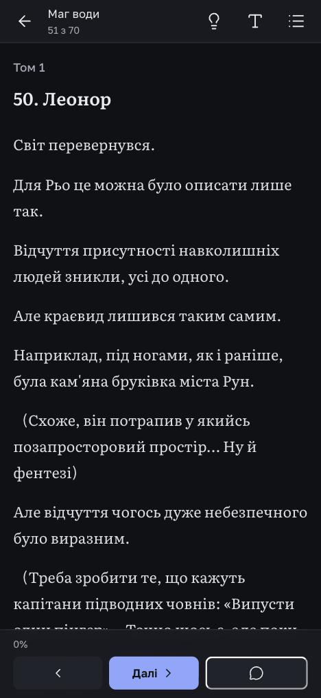
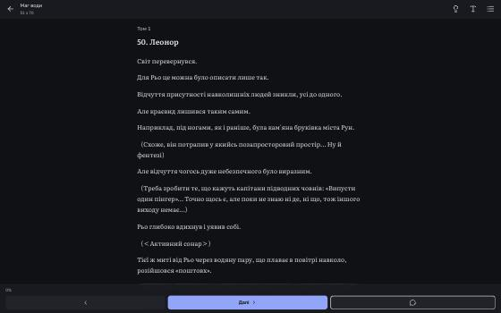

Вигляд сайту складається з двох незалежних виборів у «Налаштуваннях → Вигляд сайту». Каркас задає будову: розкладку, навігацію, шрифти, форму кнопок і карток, щільність. Тема задає лише кольори. Будь-яка тема лягає на будь-який каркас: під кожним каркасом можна перемкнути кольори й одразу побачити поєднання. Нові відвідувачі бачать «Пульт» у темі «Сланець».
Кожен каркас показано на двох екранах: читалка на телефоні й робоче місце перекладача на комп'ютері. Екран телефона прокручується. Сонце в шапці макета комп'ютера вмикає світлий варіант теми.
Студія як професійний інструмент, схожий на редактор коду. Панелі стоять впритул і розділені однією лінією. Другий акцент завжди позначає оригінал, головний — переклад і дії. Номери, лічильники й клавіші набрано моноширинним шрифтом, унизу рядок стану, будь-яку дію можна знайти через ⌘K. Читалка при цьому спокійна: зверху тонкий рядок, знизу командна панель.
Та сама глава й та сама правка. Номер абзацу видно лише в правці. Безшовний перехід позначено лінією «гл 13».
Сітка «№ · EN · UK» на всю висоту, під вибраним абзацом панель дій з клавішами й виділеним словом. Праворуч інспектор: словник, вичитка, історія.
Нинішній сайт, доопрацьований. Будова й шрифти лишаються знайомими: шапка вгорі, картки з м'якими кутами, Golos Text і Literata. Читалка легша, ніж зараз: замість трьох великих кнопок унизу тонкий рядок прогресу, текст по ширині з переносами. Студія отримує сітку «оригінал · переклад» у картці, панелі, які можна сховати, і словник праворуч.
Шапка як зараз, але легший низ: стрілки й прогрес замість великої кнопки «Далі». Правка — картка з рамкою акценту.
Три картки: глави, сітка «№ · оригінал · переклад», словник глави. Над ними перемикачі колонок і «Як у книжці».
Сайт як добре зроблена книжка: засічки, класична верстка з відступом першого рядка, капітель. Карток немає зовсім, усе тримається на полях і тонких лінійках. Робоче місце — розворот рукопису: оригінал на лівій сторінці, переклад на правій, номери абзаців у корінці, словник на полях.
Глава 12, абзац 2 у правці на місці; лампочка ввімкнена. Унизу екрана безшовний перехід у главу 13 і сірі форми, поки вона вантажиться.
Розворот: виділене слово в абзаці 2, пропозиція вичитки ШІ в абзаці 3, неперекладений абзац 7. Праворуч словник глави на полях.
Яскравий сайт для читачів ранобе: широкий гротеск і величезні номери глав, як на обкладинках. Форми пухкі й округлі, кнопки великі, керування плаває над текстом. Сам текст глави спокійний, бо колір живе в рамці навколо нього.
Великий номер відкриває главу. Правка в абзаці — картка з рамкою акценту, наступна глава з'являється карткою з великим «13».
Абзаци картками «оригінал · переклад», пропозиція ШІ — з позначкою другого акценту. Праворуч словник з портретами-буквами й лічильники глави.
Перший макет нового дизайну взяв ці самі кольори, шрифти й форми, тому сайт після нього майже не змінився. Каркас «Звичний» розвиває саме цей вигляд, решта три від нього відходять.


У «Налаштуваннях → Вигляд сайту» буде два вибори: каркас (Пульт, Звичний, Палітурка, Обкладинка) і тема (Сланець, Графіт, Сукно, Слива; кожна має темний і світлий варіант). Гість вибирає так само, вибір пам'ятає браузер. Свої кольори з нинішнього «Свого стилю» лишаються ще однією темою.
Наступний крок — усі екрани з переліку в чотирьох каркасах, з кольорами через змінні теми, групами: читач, Студія, решта. У кожному каркасі однаково лишаються ваші вимоги: